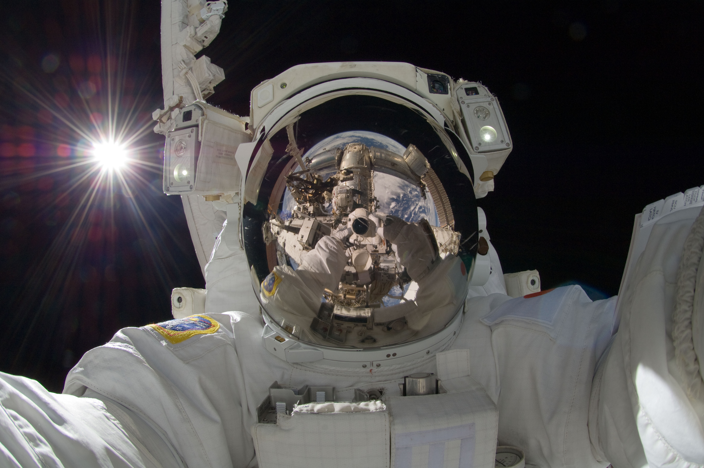
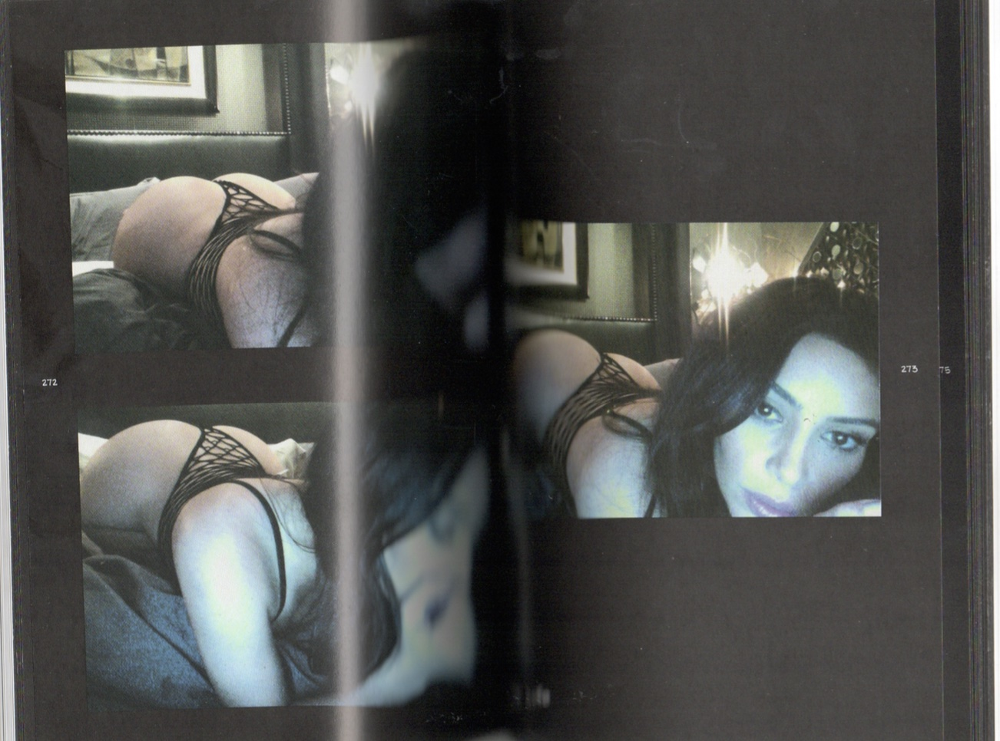
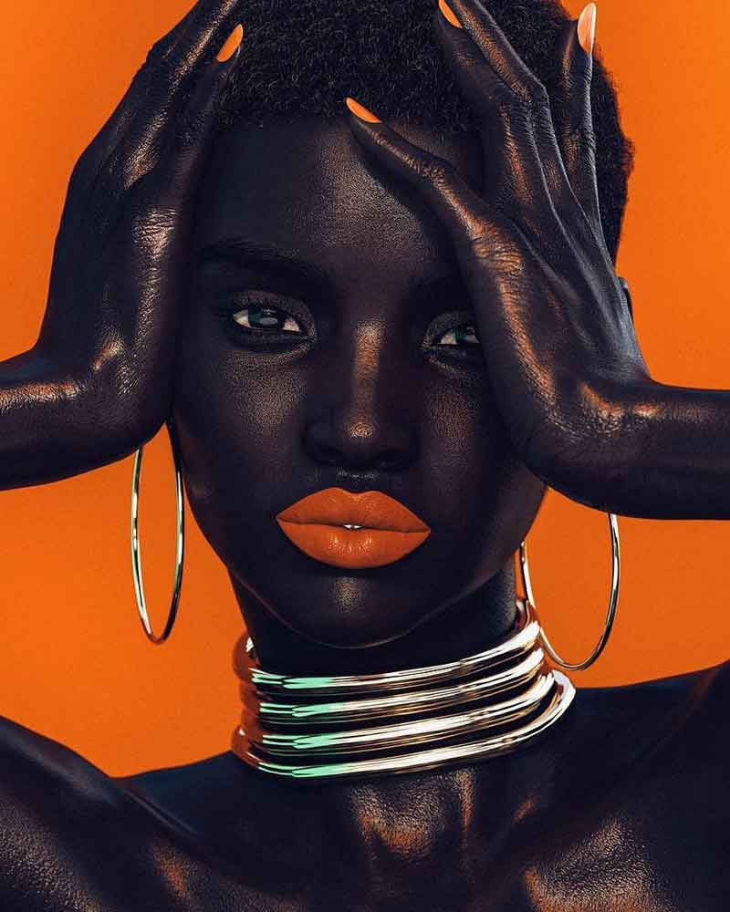
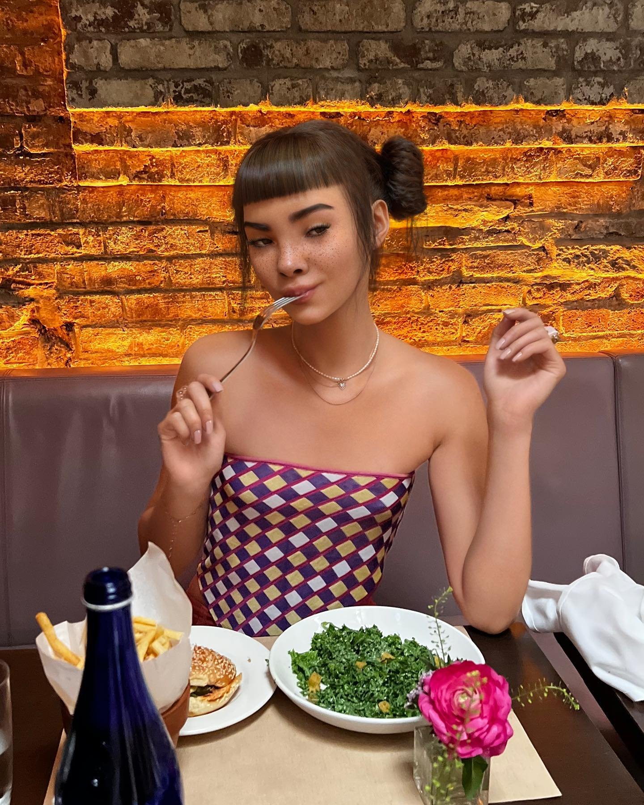

BEHIND THE LENS
Bachelor Thesis written by Beren Tezcanli, Graphic Design Department Royal Academy of Arts The Hague 2024
Abstract
This research examines the multifaceted aspects of the camera (in any form), exploring its effects within and on mass media, daily politics, hyper-capitalism, beauty standards, public consumption, and how it induces oppression in relation to psychological behaviors. By navigating through the interplay of these elements, the writing aims to provide a broad understanding of how the increase of cameras has shaped societal dynamics. The research unfolds a narrative that begins with camera culture/aesthetics, its influence on mass media narratives, its role in shaping societal standards, and the relation between hyper-capitalism and public consumption. The study searches through the link between psychological behaviors and their impact on individuals and collective behavior. Through the exploration of these dimensions, it aims to uncover the complicated nature of camera culture and how it impacts modern society.
In a camera-centric environment, what are the impacts of the camera culture, on both individual perspectives and the overarching collective dynamics of society?
Introduction
“Are you ready? Keep smiling. 1,2,3 say cheese!” Does this digital sentence sound familiar from somewhere? It sounds very familiar to me. Camera in its simple meaning: a device for recording visual images in the form of photographs, film, or video signals.1 Cameras have always been a part of my family and my life. My initial encounter with a camera occurred at an early age, during my birth in 2002. Since 2002 cameras involuntarily played a big role and are still part of my life.
I remember me and my twin playing, my dad holding a big camera and capturing every single moment with his voice behind the camera. Us smiling at the camera, trying to speak, trying to say mom, trying to grow. Natural.
I find footage of myself, I’m 13, singing, filming myself. It’s a digital camera. I’m holding the camera in reverse, I don’t see my face, I don’t see what I’m filming. Innocent. I don’t care about how I look; I don’t care about what I wear, I don’t care about how bad or well I sing. Honest.
I recall this moment: having dinner with my family and taking a photo before we started. Me being annoyed. One person always got up from the table to take the picture with the phone and one person was missing from the picture and the moment. A fake environment is created. “1,2,3 say cheese!” Everybody smiles for 3 seconds and afterwards, everybody eats. As nothing happened. Fake.
I recollect the memory; me and mum. In The Hague, sitting in a café. I order a coffee for both of us. The coffee arrives, and mum takes her phone out. Telling me not to drink, first taking a picture of the coffee, then taking a picture of herself with the coffee. Sharing the picture on Instagram as a story, checking the viewers, and counting them. Not staying in the moment, not staying with me. Focused on the story of the image. Focused on the perception of the image. Focused on the digital world. Selfish?
In the following chapters, I will delve into the different perspectives of cameras and take you to different angles of cameras. Exploring the aesthetics of the camera, exploring the self-perception of the camera, exploring the male gaze of the camera, exploring the standards of the camera, and exploring the reality of the camera. Exploring the camera as a ‘virtual playground’.
Let Me Take a Selfie
I exist.
In 2013, the Oxford English Dictionary announced that its word of the year was ‘selfie’, which it defined as “a photograph that one has taken of oneself, typically one taken with a smartphone or webcam and uploaded to social media.” 2 Each selfie is a performance of a person as they hope to be seen by others.3 In December 2012, Japanese astronaut snapped a unique selfie in space, diverting the camera from the mesmerizing views of Earth, space, and the moon to focus on himself. The term ‘self-portrait’ comes from early photography exploration. It was an experiment where the photographer had to act as a model as well. The first-ever ‘selfie’ was taken by a photographer; Robert Cornelius in 1839. This act supports the notion that the term ‘me addiction’ and the desire for self-expression have existed since an early age and have increased over the years with the culture of social media and the lens of technological advancements. This action depicts Hoshide’s desire to gain attention, to be seen, and to be recognized. In How to See the World Nicholas Mirzoeff describes; “How the image of planet Earth was earlier the focus, how the Blue Marble was the protagonist. 40 years later we see planet Earth as a mere reflection in the vizor of the astronaut.” 4
We live in a world, which doesn’t certainly mean it is equally available for all of us. However, the world is changing. Nowadays everybody has their own phone, including the elderly. Everything is approachable. The world we live in right now is not the same as it was five years ago. In the world we are living in right now, 93 million selfies are taken each day, with at least 100 appearing on social media. Each one is a unique self-portrait, a performance, a tool for people to prove themselves. Desirability is transmuted into the trans-actional. We are trained to never be satisfied, in a landscape where everybody is not only replaceable but upgradeable.5 All media are social media. We use them to depict ourselves to others. We use them to gratify our needs. We use them to satisfy needs of self-presentation, habit, attention-seeking, entertainment, and status-seeking.6 We are using our bodies as extensions: clicking, taking, linking, and sharing selfies.
There are two kinds of selfies, in terms of content. One is a performance for your digital circle, and the other is the celebrity selfie, which extends and maintains the fame of its subject, such as Kim Kardashian. Kardashian is known for her role in the series Keeping Up with The Kardashians, and her selfies, displaying her body and face in different poses, but this desire remains unclear. In 2015 Kim Kardashian published a 445-page book called "". In the book, Kardashian shared her unseen self-portraits. One might remark that it's difficult to imagine that we haven't seen all images of this person since they appeared on Keeping Up with The Kardashians, which has been the key to their enduring fame.
Kardashian was sharing her private self-portraits with the details of her life. The book features Kardashian's old and new photos, including topless shots, giving readers a behind-the-frames. Kardashian wanted to reveal the unseen by this action. Kardashian was forcing the reader to look at her the exact way she wanted the reader to, from the exact angle, in the exact lighting of her choosing. Kardashian started putting her audience to certain standards and patterns. Kardashian depicts her needs through self-portraits. She has the hunger to be seen, to get attention. Kim took 6,000 selfies on her 4-day Mexico vacation in 2016, which equates to 1,500 selfies per day with 1,500 different poses and filters. Filters like “Paris”, “Los Angeles”, “Oslo”. Filters like tools that change the way we look, make us flawless by filtering out flaws and fixing certain parts of reality we perceive.
We are in control when we are taking a selfie. We change the angle of the camera, we change the light set-up, we choose a filter... However, there is a certain self-portrait where we don’t have control of the set-up. The one photograph where we all look equal yet so different. The one photograph that we all have: is passport photographs. It is a typical portrait set-up. People know to stay still and look into the lens. Most of the people do not smile. There is a time limit. People cannot take as many portraits as they want. “It is a constrained set-up yet there is some enactment of a persona.”7 It is alive. It speaks. But how does the audience react to the picture-making in an era where everyone can take a good one? The power balance had shifted. It is no longer how we control our images; it is about how we look and how we want to be seen in the world where images of celebrities and influencers have become financial assets.”8 To take the “perfect” selfie poses and angles play a big role. There are certain poses where you can look sexy. There are certain poses where you can look cute. There are certain poses where you can take a good selfie and can “slay”.
“In the 18th century, , a Dutch physician, popularized the 'facial angle' by measuring Greco-Roman statues. He proposed ideal angles: Europeans at 80 degrees, Asians and Black individuals at 70 degrees, and orangutans at 58 degrees, advancing cranial morphology understanding.”9 This proposition may have fostered the roots of the problematic notions of beauty, and racialized sense of beauty.

He established facial angles as the standard for beauty. With Camper’s proposition, today’s beauty standards are determined. The hierarchy is determined. The search for essential beauty began. Needless to say, should be that these are highly contested notions of beauty. This search for beauty is visually transformed and transmitted into our lives as the filters that we see on digital media. The selfie has become so dominant as a form, that it is shaping technology. The digital media is one of the powerful sources to master the "perfect" selfie. On YouTube, it is very accessible to find selfie tutorials. Type in “How to take a selfie”, see the categories, see the categorization. How to take a selfie for guys, how to take a selfie like a model, how to take a selfie like a pro, and how to take a selfie for “Tinder”. These patterns demonstrate society's desire for conformity, the need for validation, and the pursuit of perfection in self-representation. Digital media prepares us to fit into beauty standards and patterns. Is there space to disobey these standards? Is there an attempt to escape from these standards?
: an artist whose work revolves around facial recognition technologies. In his work, Face Cages (2011-14) he opposes the term “capture” which describes how bodies and identities become algorithmically standardized to be informatically legible.10 Therefore, he masks the ability to capture the face, he masks the standardization. He escapes from the standards; he rejects the recognition.

We are becoming the technologies of self. More than 1,000 products are being developed to make selfies better. The filters that social media provides us are very accessible and realistic. This reality on social media drags us into an endless hole. People are seeking cosmetic procedures to look like their filtered selfies.11 These photos typically feature "fuller lips, bigger eyes, or a thinner nose" than the patients have in real life.12 As a British cosmetic doctor suggests; “social media has made people more visually aware than ever before," and therefore "more critical" of themselves”.13 Especially for younger generations, this creates mood, body, and facial dissatisfaction at baseline. This creates a comparison between the user and the filters. This creates a non-existing beauty standard. This creates an abnormal normal perception. This creates an augmented reality.
Finding myself filming a TikTok, using the ‘retouch’ effect. I don’t remember selecting the filter. Realizing that the algorithm of TikTok puts it on automatically. Turning the filter off. Feeling dissatisfaction when I see the scars, the texture, the reality on my face. Will I be able to bare to see my face in the future without the filters?
Gimme More, Gimme More, Babe
They exist.
Seeing is changing, what we see is changing, and how we see is changing. The viewer is changing, the context is changing. “TikTok” is the fastest-growing social media platform, and it pictures the big change in the social media circle. TikTok becoming a “virtual playground” for the new generation and meanwhile their escape from reality. Or should I say the new reality for them? People consume the content for information and entertainment; participate in social interaction and community development; and produce for self-expression and self-actualization.14 But is it only the entertainment that is being consumed? TikTok is changing the culture, our values. The shift in girls’ "bedroom culture," a concept by sociologist Angela McRobbie, from private and judgment-free to publicly visible, is evident on TikTok. Most of the girls are filming in their bedrooms.15 The transformation of camera culture into something fast, consuming, competitive, addictive, threatening, not private....
TikTok is spreading the idea that “everyone can become famous”. To support this judgement let me introduce a name: Addison Rae. Nowadays a white famous TikTok celebrity. 2019, she posted her first TikTok. Casual. Natural. Just for fun. Now, she has 36,5 Million followers on Instagram and 88,7 Million followers on TikTok. She is famous. The new generation emulated this idea. The new generation saw how easy and fast it was to become famous. The new generation searched for interaction. The underlying reason for this search is the desire for attention. TikTok is a powerful tool that provides its users with opportunities such as editing videos, making them more interesting (sound effects, filters, tags), and interacting with other users (use of unique hashtags, challenges, the algorithm), thus making it possible to present the digital self effectively. But what is the content that is being gazed at on TikTok? What kind of context people are trying to fit themselves into? Are they showcasing their true selves, or are they in pursuit of an alternate identity?
On TikTok, as everywhere else in our social media outlets and the world of film and advertisement, the male gaze is dominant. You want to look beautiful and presentable for the notion that someone may be watching or judging. As Laura Mulvey writes in her essay, “Visual Pleasure and Narrative Cinema”, 1975: Under the male gaze, women are to be looked at and displayed, with their appearance coded for strong visual and erotic impact so that they can be said to connote “to-be-looked-at-ness”.16 The knowledge surrounding the male gaze transformed into the “main character” trend on TikTok. This trend evolves around women, consisting of women posting videos of themselves, walking, reading, existing, and “romanticizing” their lives while trying to appear purposely mysterious. It encourages the idea in women’s minds that women should always try to look sexy and attractive and that the man of our dreams is gazing at and admiring us from a distance. However, the damaging consequences of this trend on women are not frequently discussed.
This trend has arisen from centuries-old depictions of women in literature, and cinema. In these mediums, women were portrayed in an idealized way. The roots of this idealization come from the patriarchal system; the same language that has been spoken for ages... Cinema can be shown as one of the strong visual explanations of this example. Due to the existence of a patriarchal culture industry, mainstream films show a pattern when presenting both male and female characters. A man holds power, and the female character is displayed as a sexual object, which suits the male character’s desires and visual pleasures.17 Mulvey describes this as the term; “The Male Gaze” in her “Visual Pleasure and Narrative Cinema” essay (1975). The control of the camera, the angle of the camera, the framing of the camera, the point of view of the camera... Consequently, the woman becomes objectified, influenced by the idealized image presented in cinema. “The woman displayed has functioned on two levels: as an erotic object for the characters within the screen story, and as an erotic object for the spectator within the auditorium. In other words, the heterosexual male character is not the erotic object of the gaze, but one of the more perfect, powerful ideal egos conceived who can make things happen and control events where he displays his dominance.”18 Yet, the camera allows us to understand, how we interpret, how to observe the scene.
One of the phenomena of the camera angles: The Wolf of The Street by Martin Scorsese. The movie revolves around the life of Jordan Belfort (Leonardo Di Caprio) who is a finance scam artist. From the beginning, the film introduces and depicts women as objects that can be purchased like food. It objectifies them. Women are displayed as “sorely lacking in depth, strength and feminism” yet Belfort is depicted as the strong, bold, confident, white man. Naomi (Margot Robbie), Belfort’s second wife is coded all over.19 Coded with the male gaze. Coded with male centered. Coded with androcentrism which refers to the propensity to center society around men and men's needs, priorities, and values and to relegate women to the periphery.20 In the first scene, she appears as the idealized, blonde woman with a skintight blue mini dress with a cutout revealing a good part of each breast. The camera captures Naomi with the gaze of Belfort while two other friends in a conversation:
- I would fuck that girl if she were my sister.
- I would let that girl give me fucking AIDS.
The camera doesn’t show the men as they are talking but emphasizes Naomi as an object that men are determined to attain. That they can prey upon, measure, discuss, own. She exists only in relation to Belfort. Not only Naomi was being put under the male gaze, but the woman in the office is mistreated. The scene when a female employee agrees to have her head shaved in front of the trading floor in exchange for 10.000 dollars which she wants to use for D-cup breast implants. It represents a female character with a materialistic attitude. It represents a fetish object or turns the represented figure itself into a fetish so that it becomes reassuring rather than dangerous.21 Never feeling the self-satisfaction and always trying to please. In another provocative scene, Naomi is teasing Belfort in a very scandalous outfit. The point of view alternates between eyes and erotic leg.22

The audience finds themselves inside this very sexualized scene. The second shot reveals the infatuated look on Belfort’s face. This scene can be supported by Mulvey’s argument where she proposes: “the conscious aim is always to eliminate intrusive camera presences and prevent a distancing awareness in the audience”.23 Thus, the illusion of reality engages the audience emotionally without disrupting the intended narrative experience. What is being depicted in cinema is the illusion of the reality that the cinema shaped.
"Media manipulation of images has become so powerful that it can create what I refer to as an icon of the self; the commodity self." - bell hooks
Media manipulates images. Images shape our representations. Representations create the icon of ourselves. The icon creates the aesthetic. The aesthetic perception: "glossy-glam aesthetic." Flawless, shiny, clean, sterilized, HD. We don’t see pixels anymore. We don’t want to be pixelated. We want to be seen as “sleek” as possible. The concern of our aesthetics increases with the emerging media. We see manipulated images in media. This influences our self-image, resulting in a disparity in our desired external image. Kate Cooper, a British artist, inspires immediate physical and aesthetic attraction. Her exhibition at the KW Institute for Contemporary Art in Berlin looks at the agency of the computer- generated female within the glossy aesthetics of consumer capitalism.24 As technology diversifies the body it becomes difficult to understand what and whose body is it and what is being performed. “The image of woman is constantly changing,” Cooper says. Through the objectification of the digital bodies: “In all images, particularly of women, there’s a relationship to desire, and within that a real violence.”25 The female body is seen as a commodity. But how do we participate in these images?

The first digital virtual model: . A brown flawless skin, and a stunning body with symmetrical features. We’ve become so accustomed to false realities on Instagram. False realities that we are adopting to be approved and accepted by society. Shudu blurred the line between reality and fantasy. Shudu is a computer-generated personality, created in 2017 by a white photographer Cameron-James Wilson. He was inspired by the South African “Barbie doll” called Princess of South Africa. Shudu was portraying the “ideal” beauty standard of Wilson. Wilson explains; "I am just a creative person, and to me, she is what the most beautiful woman in the world would look like."26 He intended to create someone to fit into his beauty standard. Unfortunately, he is completely unaware of his positive racist thinking and abuse of black subjects. Another example: ., an artificial model created by Trevor McFedries & Sara Decou. She is depicting her best self, with her different style and flawless skin with freckles. She has 2.6 million followers on Instagram. She has the real gaze with the unreal elements. The unreal is becoming more real. It’s all fake and we love fake. These mediums are determining the new “aesthetic perception”. Women compare themselves with pixels and try to fit into certain unreal beauty standards. Do we have freedom within the images, or do we create our restrictions within these images?
 It's Just An Illusion
Who wants to exist?
What is the reality being depicted behind the camera lenses? Can we even discriminate between what is real and what is not? How often do people perform their real selves in front of cameras? Robbie Williams: an English singer and songwriter. Known for his fame starting from an early age in a boy group. Year: 2006, Williams performs a live show in Leeds in front of 90,000 people. He feels overwhelmed by the pressure. During the show, Williams experiences a panic attack.
Where he describes the panic attack “Last night was an absolute disaster for me. I developed a panic attack before I went on that didn’t finish through the performance.”27 He couldn’t cut the show halfway because of the pressure, because of the reality. He acted, acted as if everything was fine. This was shown to more than 100,000 people. The pressure of the camera, the pressure of the transmission, the pressure of the reality was alive, it was LIVE. Williams begged to quit the tour but continued it as if everything was “okay”. Not everything depicted on cameras is real, not every action we see is real or let’s say authentic, many things are staged FOR the camera. What happens once the cameras and the spotlights are turned off remains another aspect. One could argue then that what is shown on the screen is selected, framed, and well-chosen. What we wish to believe is either a story or maybe the reality.
A depiction of reality with cameras, with scripts. A genre talking about reality, redefining beauty ideals. A genre creating sudden fame. A genre that influences almost every path of life. We have all watched a reality show at least once in our lives, despite being aware that this genre often fails to accurately portray reality (of many). There is a direct connection between watching reality TV and voyeurism and certainly conjures up images of looking through people’s windows and obsessing over someone’s private life. We all desperately want information about how others live their lives because we want to know how to live ours. However, we have been taught that this desire is nothing more than unjustified curiosity.”28 Yet, I would like to emphasize the contrast that, the chosen candidates are the people who want to be gazed at, gain curiosity, and share their privacy. There’s research that suggests that the more narcissistic a person is, the more they engage with social media, the more friends they have on social media, and the more time they take to curate their persona."29 These people have a strong desire to be recognized. But do we know how often reality shows portray the real selves of the candidates or does it become a dystopia like “The Truman Show.” Where their emotions and personal experiences are turned into commodities to be consumed by viewers.
The show begins with choosing the candidates. Contestants that are chosen by audience gaze. Selected narratives. The selected reality they want to display. They create stereotypes. They provide a fabricated world. They choose the outfit. Finally, they manipulate. They filter out. I would like to support this argument with a well-known reality show: Big Brother. A reality show in which 10 real-life strangers live together in isolation for three months under continuous observation (over 100 cameras) to compete for a $500,000 prize.30 10 strangers sharing their privacy, sharing their values for the prize, for the fame, for the attention in front of the gaze of the public. This show is being showcased as a game. But when is a game, not a game anymore?
A game stops being a game when it negatively affects people, causing anxiety, portraying them as commodities, or manipulating their personalities. Melanie Hill who is a former Big Brother contestant shares her disappointment that the show’s editing was displayed from a dominant male gaze perspective and a “stereotypical” persona. Hill describes; “I had been portrayed as a total flirt, someone who was completely self-obsessed, a bit of a shameless hussy." She mentioned her surprise at the producers' decision to show her "tidying her bikini line". In 2002, she said: "Over and over again was the sight of my bottom - in a bikini, in the shower - or of me kissing all the boys."31 The manipulative attitudes are active and being used to fit the characters into certain stereotypes. The reason for this is the fascination with observing stereotypes from the audience. We use the TV as a mirror, watch ourselves, and therefore critique ourselves. This fact supports the reason why reality shows are being watched extensively by society; to judge ourselves, to reflect on ourselves. Yet, Melanie was unequivocally treated as a commodity on TV, violently, and her character was blatantly manipulated. This demonstrates the power dynamics present behind the camera and the continuous influence of patriarchal hierarchy.
A game is not a game anymore when people are suffering from anxiety: Paloma Aguilar. Paloma is a former Big Brother contestant who quit the show because of her mounting anxiety. After returning to the outside world she expressed herself; "I left because of an ongoing mental health battle I faced which began once inside the walls of an idealistic utopia of a reality set. A reality that was far from the reality of my San Diego life.”32 This incident highlights that reality shows can cause anxiety, and depression and distort one's perception of reality. It transforms into a deceptive representation of who we are. It transforms into an illusion where the line between reality and fantasy is blurry. People start losing touch with reality. People get manipulated by the reality that has been created.
"Reality shows have a curious ability to make the familiar strange and the strange familiar, manipulating perceptions and normalizing the extraordinary." - George Orwell
The escalating use of digital media stresses a societal shift towards external validation, accentuating the prevalent issue of loneliness. This shift fosters a desire to be noticed, prompting individuals to seek fame through the utilization of mass media. Unawareness or disregard of its impacts this desire for recognition, driven by a sense of alienation, has far-reaching implications for both contestants and viewers. The yearning for validation can occasionally obscure one's authenticity or drive them to pursue approval through superficial methods. Consequently, pursuing fame, often as a remedy for loneliness, risks compromising the identity.
The game ends when one of the teams loses. Who will lose the game here? The audience, the contestants, or the producers? Or do we even have a winner in this scenario?
The End
Cameras (in any form).
Controlling the society.
Capturing us.
The society follows the imposed perception.
The impact of media is alive.
Alive and live.
The continued existence
of the male gaze.
The presence of the commodification of the female body.
The existence of the manipulated frames.
The presence of the filters.
The presence of false realities.
The presence of the illusions.
Determining our lives.
Our lives are directed by the media.
The media form the standards.
The standards shape the reality.
The reality blurs the line between
The real
and
The unreal
The unreal becomes the new real.
The new real grows into a desire.
As a remedy for loneliness within the new reality;
The desire to be seen is born.
“to-be-looked-at-ness”.
Bibliography
Camera | English Meaning - Cambridge Dictionary, dictionary.cambridge.org/dictionary/english/camera.
Bailey, April H, et al. “Is Man the Measure of All Things? A Social Cognitive Account of Androcentrism.” Personality and Social Psychology Review: an official journal of the Society for Personality and Social Psychology, Inc. vol. 23,4 (2019): 307-331. doi:10.1177/1088868318782848
Dabiri, Emma. Disobedient Bodies: Reclaim Your Unruly Beauty. Welcome Collection, 2023.
DeVault, Ryan. "Paloma Aguilar Now Blames Her Big Brother Gameplay on False 'Narrative' and 'Cancel Culture'." Monsters and Critics, 27 July 2022, www.monstersandcritics.com/tv/reality-tv/paloma-aguilar-now-blames-her-big-brother- gameplay-on-false-narrative-and-cancel-culture/.
Feminist Equal Rights Alliance (FERA). "The Male Gaze: How TikTok Is Generating Discussion on This Age-Old Phenomenon." Medium, Medium, 28 Feb. 2021, ferauoft.medium.com/the-male-gaze-how-tiktok-is-generating-discussion-on-this-age- old-phenomenon-e56c95d75aad.
Galperina, Marina. "Kate Cooper’ s Hyperreal, ‘Hypercapitalist’ CGI Females." ANIMAL, 24 Sept. 2014, animalnewyork.com/2014/09/24/kate-coopers-hyperreal-hypercapitalist-cgi-females/. Accessed 27 Feb. 2024
Gilbride, Tricia. "Kim Kardashian Took the Optimal 6,000 Selfies on Her Mexico Vacation." Mashable, Mashable, 29 Oct. 2021, mashable.com/article/kim-kardashian-6000-selfies.
Herbst, Moira. "The Wolf of Wall Street’s Male Gaze." Al Jazeera America, 9 Feb. 2014.
Hosie, Rachel. "People Want to Look like Versions of Themselves with Filters rather than Celebrities, Cosmetic Doctor Says." The Independent, 6 Feb. 2018, www.independent.co.uk/life-style/cosmetic-surgery-snapchat-instagram-filters-demand- celebrities-doctor-dr-esho-london-a8197001.html. Accessed 10. Jan 2024.
Kearney, Amanda. "Uses and Gratification of Posting Selfies on Social Media." Theses, May 2018, repository.rit.edu/theses/9717/. Accessed 26 Jan. 2024.
Kelly, Philippa, et al. "Kalpesh Lathigra’ s Passport Photos Question Issues of Egalitarianism, Hierarchy and Privilege." 1854 Photography, 15 Feb. 2023, www.1854.photography/2023/02/kalpesh-lathigra-a-democratic-portrait/. Accessed 14 Jan. 2024.
Lazar, Samantha. "Jordan Belfort’s Male Gaze and Its Effect on Filmgoers – the Prolongation of Work • F17.2." Sites.williams.edu, 12 Dec. 2017, sites.williams.edu/f18-engl117-02/uncategorized/jordan-belforts-male-gaze-and-its- effect-on-filmgoers/.
Marain, Alexandre. "From Lil Miquela to Shudu Gram: Meet the Virtual Models." Vogue France, 5 Apr. 2019, https://www.vogue.fr/. Accessed 16 Jan. 2024.
Marsh, Calum. "The Long, Long Reign of 'Big Brother'." The New York Times, 8 Aug. 2023, www.nytimes.com/2023/08/08/arts/television/big-brother-season-25.html. Accessed 25 Jan. 2024.
McRobbie, A., and Garber, J. "Girls and subcultures." In: Hall, S., and Jefferson, T. (eds) Resistance through Rituals: Youth Subcultures in Post-War Britain (2nd ed). London: Routledge, pp.177–188, 2006.
Mcquin, Kaitlyn. "These TikTok Trends Are Adding Shame to Women’s Pleasure." Restless Network, 10 Feb. 2021, https://restlessnetwork.com/.
Mirror.co.uk. "Big Brother 1’S Melanie Hill Now – Reality Origins to Equal Rights Campaigner." The Mirror, 16 Dec. 2021, www.mirror.co.uk/3am/celebrity-news/big-brother-1s-melanie-hill-25714968. Accessed 28 Jan. 2024.
Mirzoeff, Nicholas. "Chapter 1/How To See Yourself." How to See the World: An Introduction to Images, from Self-Portraits to Selfies, Maps to Movies, and More, Basic Books, New York, 2016.
Mulvey, Laura. "Visual Pleasure and Narrative Cinema." 1975.
Pearlman, Joe, director. Robbie Williams. Netflix, 8 Nov. 2023, www.netflix.com.
Rajanala, S., Maymone, MBC., Vashi, NA. "Selfies—Living in the Era of Filtered Photographs." JAMA Facial Plastic Surgery, vol. 20, no. 6, 2018, pp. 443–444.
Rose, Phyllis. Parallel Lives: 5 Victorian Marriages. Knopf, 1984.
Rosenstein, Jenna. "People Can’t Tell If This Fenty Model Is Real Or Fake." Harper’s Bazaar, 9 Feb. 2018, https://www.harpersbazaar.com/. Accessed 16 Jan 2024.
Shao, G. "Understanding the appeal of user-generated media: A uses and gratification perspective." Internet Research, vol. 19, 2009, pp. 7–25.
Sluis, Katrina. "Artist Profile: Zach Blas." Rhizome, 1 Mar. 2017, rhizome.org/editorial/2017/mar/01/artist-profile-zach-blas/. Accessed 23 Jan. 2024.
Ugelvig, Jeppe. "Kate Cooper: Hypercapitalism and The Digital Body." DIS Magazine, https://dismagazine.com/. Accessed 25 Jan. 2024.
Van Dijck, José. "You have one identity: Performing the self on Facebook and LinkedIn." Media, Culture & Society, vol. 35, 2013, pp. 199–215.
Wilson, Marc. "Why Do People Go on Reality Television Shows?" Wellington Faculty of Science, Victoria University of Wellington, www.wgtn.ac.nz/science/ask-a-researcher/why-do-people-go-on-reality-television-shows. Accessed 20 Dec. 2024.
Yang, Lucy. "People Are Seeking Plastic Surgery to Look like Their Edited Selfies in Real Life — Here’s Why Doctors Think the Trend Is 'Alarming'." Business Insider, www.businessinsider.com/plastic-surgery-selfie-filters-2018- 8?international=true&r=US&IR=T. Accessed 5 Jan. 2024.
Figure Sources
Blas, Zach. “Face Cages.” Zach Blas, image, 2014, zachblas.info/works/face-cages/. Accessed 10 Feb. 2024.
Camper, Pieter. “The Works on the Connexion,” Wellcome Images, 8 Sept. 2014, wellcomecollection.org/works/h3avv6j5?wellcomeImagesUrl=/indexplus/image/L0018736.html. Accessed 26 Dec. 2024.
Cooper, Kate. “Rigged.” Artsy, image, 2014, www.artsy.net/artwork/kate-cooper-rigged. Accessed 16 Jan. 2024.
Gramn, Shudu. “🍊🍊🍊.” Instagram, image, 4 Feb. 2018, www.instagram.com/p/Be0ldl7F-Pu/. Accessed 22 Feb. 2024/
Kardashian, Kim. Selfish. Rizzoli, 2016
NASA. “Akihiko Hoshide,” Wikimedia, 14 Sept. 2012, spaceflight.nasa.gov/gallery/images/station/crew32/html/iss032e025258.html. Accessed 22 Feb. 2024.
Scorsese, Martin. “The Wolf of Wall Street.” Paramount Pictures, image, 6 Apr. 2019, www.paramountpictures.com. Accessed 25 Jan. 2024.
Sousa, Miquela. “You Don’t Wanna Know How Robots Digest Kale .” Instagram, image, 10 Sept. 2020, www.instagram.com/p/CiVxBRUP3g1/?img_index=1. Accessed 22 Feb. 2024.
Thesis written by Beren Tezcanli
Thesis supervisor: Füsun Türetken
Website supervisors: Thomas Buxo, François Girard-Meunier
Royal Academy of Art - The Hague, Graphic Design
February 2024.